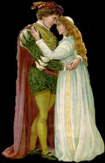

According to the creation myth of Abrahamic religions, they were the first man and woman. The story of Adam and Eve is central to the belief that God created human beings to live in a Paradise on earth, although they fell away from that state and formed the present world full of suffering and injustice. It provides the basis for the belief that humanity is in essence a single family, with everyone descended from a single pair of original ancestors. It also provides much of the scriptural basis for the doctrine of Original Sin, an important belief in Christianity, although not shared by Judaism or Islam.
Romeo and Juliet is a tragedy written early in the career of William Shakespeare about two young star-crossed lovers whose deaths ultimately reconcile their feuding families. It was among Shakespeare's most popular plays during his lifetime and, along with Hamlet, is one of his most frequently performed plays. Today, the title characters are regarded as archetypal young lovers.
Ballads from Medieval England recount the adventures of Robin Hood, a legendary hero who robbed from the rich, the government, and the church, while helping the poor and the oppressed. With his band of Merry Men, he lived in Sherwood Forest, where they hid from the Sheriff of Nottingham.
Maid Marion is presented differently in the many Robin Hood ballads and stories. In some she is portrayed as a Saxon girl who has known Robin Hood all her life, in others she is a Norman noblewoman, or the ward of the Sheriff of Nottingham who spies for Robin Hood.
Tristan and Isolde are the principal characters of a famous medieval love-romance, based on a Celtic legend (itself based on an actual Pictish king). The love story of Tristan and Isolde is one of the most famous tragic stories in the western world. Like most legendary tales told over many centuries, there are several variations of the tale; this synopsis is of Richard Wagner's magnificent 1865 opera, Tristan und Isolde. Wagner based his libretto on the 13th century romance by Gottfried von Strassburg.
Granida and Daifilo were lovers from the Dutch pastoral play Granida, written in 1605 by Pieter Corneliszoon Hooft.
Granida, the daughter of a Persian king, betrothed to Prince Tisiphernes, lost her way while out hunting. She came upon a shepherd named Daifilo and his mistress Dorilea who had just quarrelled. Daifilo fetches water for the Princess Granida to drink and the smitten youth immediately forgets Dorilea. Granida and Daifilo fall immediately in love. He follows her to court and, after several further twists and turns in the story, the pair escape to lead a sweet pastoral life together. Daifilo was taken prisoner by one of Granida's several suitors. They were finally reunited after the intervention of Tisiphernes who yielded his claim to her and took pity on the young lovers.
The most famous woman of Ancient Athens was Aspasia, the companion of the great leader of Athens, Pericles. Because she was foreign-born (metic) and a courtesan, Pericles was not permitted to marry her, but in every way she was his partner and an important Athenian in her own right.
Aspasia was probably a hetaira. There is no English word to accurately translate hetairai, but they were more than courtesans. They were indeed sexual partners, but they were also companions, better educated than other Greek women. They were educated in philosophy, history, politics, science, art and literature, so they could converse intelligently with sophisticated men. Aspasia was considered by many to be the most beautiful and intelligent of the city's hetairai.